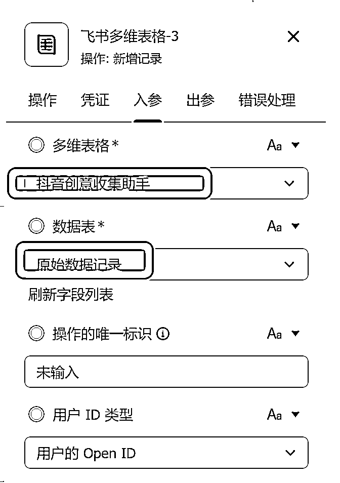

来源：https://xx0k4x6zf83.feishu.cn/docx/U2IYdyXKNonD5yxODotcQb0SnAc
大家好，我是何伟建
给大家分享一个，我觉得还是蛮实用的工具。工具是我一个客户朋友开发的，经得他本人同意，我再完善一些操作步骤、细节，分享出来给大家，感兴趣的圈友也可以自己去搭建一个。
该工具以飞书多维表格为基础，结合飞书集成平台和飞书开放平台搭建而成。
自动化收集短视频创意，支持 BGM 保存、视频关键词自动提取打标、自动保存至多维表格，当然，也支持去水印。
电脑端效果：
手机端效果：
MCN公司日常编导部门，在创作选题上刷完抖音站内热门视频后，手动保存视频，记录视频分类、数据等并在多维表格中添加相关记录。
开发调研：
1.创意视频获取途径【PC or 手机】
2.创意视频日常如何打标签、需要创意视频什么信息【互动数据、作者、发布时间、视频分类等】
3.如何做到自动化
1、通过飞书开放平台创建应用
2、点击添加应用能力，添加机器人
3、创建成功后点击权限管理，开通对应能力
4、需开通以下能力：

5、开通能力需要管理员审核

【点击前往直接创建副本即可，无需申请编辑权限】
并添加文档机器人-设置机器人管理权限
1、登录并进入飞书集成平台：飞书集成平台
此能力需要飞书商业专业版及以上版本才具备。
2、点击业务集成-新建项目-命名项目:
3、下载这个压缩包
4、点击工作流旁边的➕，选择导入工作流，导入刚才下载的压缩文件
5、导入完成后，记得将第一步【网址触发器 -设置- 回调地址 】填写至飞书机器人，并订阅【接收消息】事件
1.集成平台涉及所有机器人凭证的节点需要改为刚刚自己创建的机器人凭证
2.上传点 token 需要更改为刚刚创建的飞书多维表格 token
2.1 多维表格的token是哪个呢？
粘贴到上传点的token这里：
这几个都需要填写token
3.多维表格选择为自己创建的多维表格

这四个都要修改
工作流无异常，点击右上角发布
以上步骤完成后即可发布，开始愉快的体验吧～
防踩坑指南～